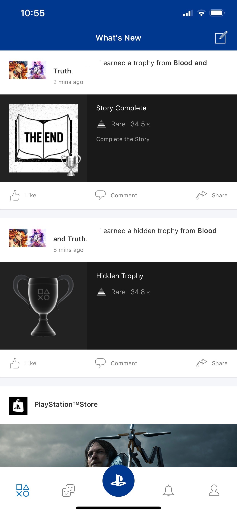
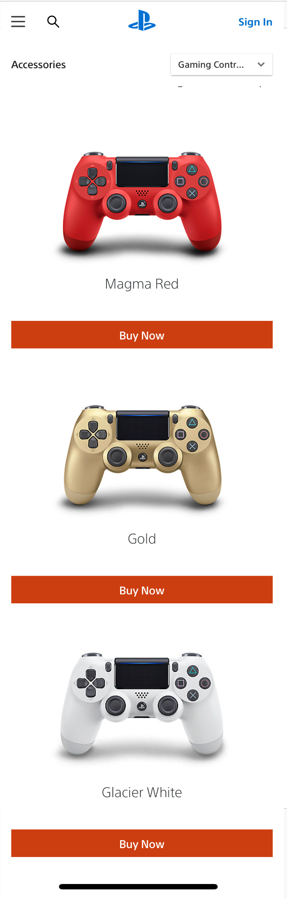
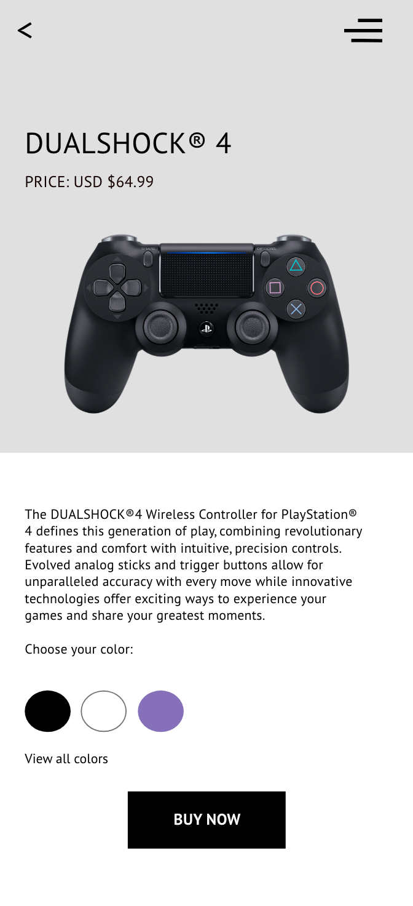

Greatness Awaits
Playstation® 4 App Design Concept

Timeline: -
Role: UI/UX Designer, Developer
Tools: Adobe XD, Photoshop, Javascript ES6, GSAP {Tween}
Greatness Awaits
Timeline: -
Role: UI/UX Designer, Developer
Tools: Adobe XD, Photoshop, Javascript ES6, GSAP {Tween}
Sony's Playstation® 4 was released in November 2013. I remember going to Walmart around 10pm to wait two hours in line for the midnight release. I've had a Playstation since childhood and I'd always beg my Dad for the newest system every few years. The PS4 was the first version I was able to buy on my own, and I've really valued that purchase ever since.
This project idea came along during an important time in my journey as a developer. I love design, and I love development, but I've been unsure of where to focus my skills. For this project specifically, I played both roles and I really enjoyed it. Sony already has a beautiful UI, so this project focuses more on user experience. I redesigned the UI the way I envision the Sony experience as a user of their products, specifically the Playstation® App.
With this redesign, I wanted to create a more premium and unique experience for the user. An experience where they feel welcomed into their account. For example, my car greets me when I turn it on. It displays "Hello" on the dashboard screen and "Goodbye" when turned off. It's a very subtle UX feature that makes me feel welcomed, and that's the mindset I had when brainstorming for this redesign. When I turn on my playstation or enter the app, I want that same feeling.
View the mobile prototype here, and keep reading to learn more.
The current UI shows the users' social feed with updates, such as which trophies your friends earned recently, and random links to the Playstation Store. I felt that a component where the user is greeted and has immediate access to their notifcations and messages was what was missing from the home page. When the user clicks on their avatar, they have access to a small menu with options to view unread messages, write a new message, view notifications, manage their profile, etc. The user can then scroll down to post an update or see updates in a live feed.
The link to shop for accessories in the current navigation redirects the user to Sony's website. I imagined a redesign where this feature and similar features are built directly into the app. There's a link to "Buy Now" under each color of controller and nothing happens when the user clicks the image. In my design, the user clicks the image to learn more about the product, view all colors and has the option to buy now.
I've added some interactivity to product page by allowing the user to see the productc in all available colors, in this case the DUALSHOCK® 4 Controller, simply by clicking on the color choice. Each product page offers a chance to learn more before buying or adding to cart.
Wireframes and prototypes for this project were created in Adobe XD. I really enjoy XD for wireframing and prototyping. Creating transitions between frames is easy with XD. It felt a lot using GSAP or Javascript where you just have to try a few different things to really get the grip of it. Being a developer, I can understand how seeing a demo of the animations from a software like XD could really be beneficial when working with designers.
View Mobile Prototype
The desktop version really brings the premium experience to life. I created a minimal design with focus on the product itself. I got a lot of practice working with transitions on this design. When the page loads, each component is brought in with a smooth animation.
View Desktop Prototype
Back to Top
© 2019 Becca T. Agunga